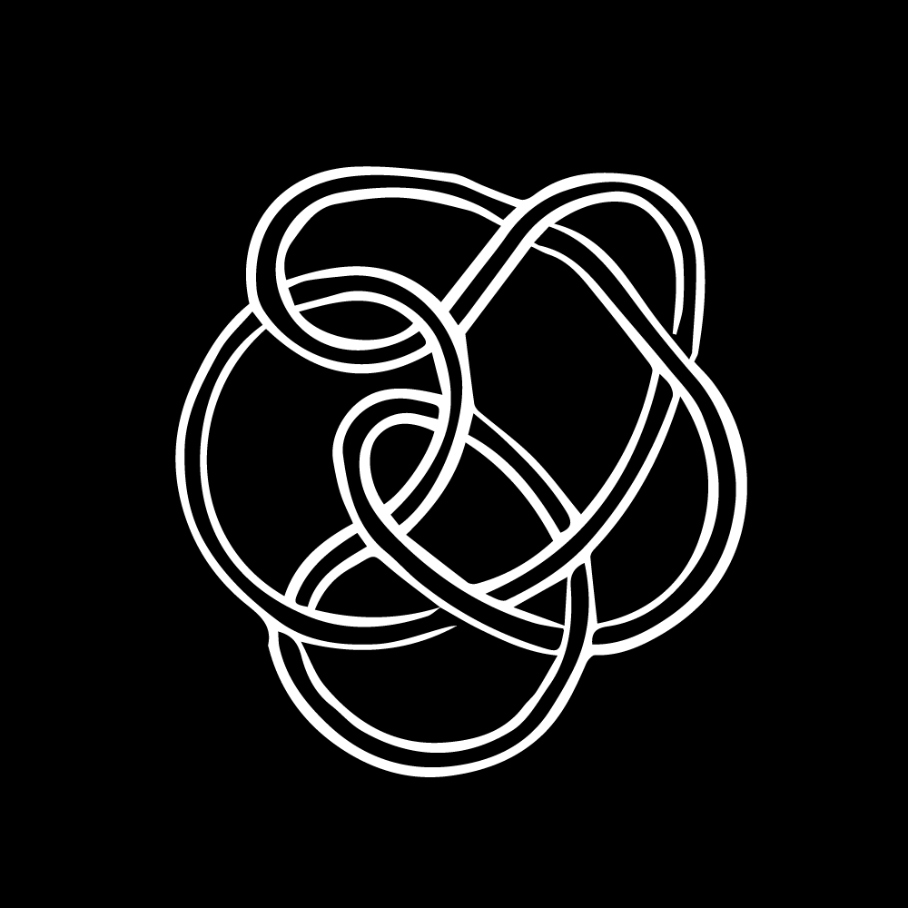

Oral History
Code Societies 2020 and beyond is a speculative oral history about the present and future as an exercise in “constructing a specific society from the components of all possible societies.” A radical imagining and coding of the society in which the students, teachers and organizers of Code Societies 2020 want to live.
Oral history project, interviews and transcriptions by Neta Bomani, narration by Code Societies students, teachers and organizers; additional transcriptions by Shea Fitzpatrick and Tsige Tafesse.
Char Jeré and Lina Chang
00:00
- January 09, 2020
- Brooklyn Public Library, 10 Grand Army Plaza, Brooklyn, NY 11238
- This interview was conducted in response to the following class(es):
- Introduction to Code Societies by Melanie Hoff, neta bomani, emma rae norton and Taeyoon Choi.
- People, cyborg, thinking, mistakes, library, stuck, afro, fractilism, representation, talking, laptop, human, reading
- Full Transcript
Simone Browne and Tsige Tafesse

00:00
- January 11, 2020
- New Inc, 231 Bowery fl 2, New York, NY 10002
- his interview was conducted in response to the following class(es):
- Surveillance Studies by American Artist and Simone Browne
- Surveillance, technology, supremacy, oral history, trust, memory, Ethiopia, family, decay, thinking, moments, life, space, game, stories, bubbles, hologram
- Full Transcript
Markov chain poetry reading
00:00
- January 13, 2020
- School for Poetic Computation, 155 Bank St, New York, NY 10014
- A poetry reading during part two of the class Computational Exploration of Magical and Divinatory Language taught by Allison Parrish. Before reading the poem, participants generated a markov chain with Python based off of a divination deck compiled in a data spreadsheet by participants.
- Allison Parrish, Adina Glickstein, Alonso Castro, Amber Officer-Narvasa, Andreas Jonathan, César Neri, Char Jeré, Char Stiles, Christina Entcheva, Cy X, Eliseo Rivera, Elizabeth Perez, emma rae norton, Holly Meadows-Smith, Ladipo Famodu, Lina Chang, Mehrnaz Rohbakhsh, Melanie Hoff, neta bomani, Shea Fitzpatrick, Sophie Kovel, Tina Nguyen
- Full Transcript
The Unfinished Sentence
00:00
- January 14, 2020
- School for Poetic Computation, 155 Bank St, New York, NY 10014
- A poetry reading during the class The Unfinished Sentence: Algorithmic Text Generation taught by Kameelah Janan Rasheed. Before reading the poem, participants created algorithmically generated texts with a variety of text generation tools.
- Adina Glickstein, Alonso Castro, Amber Officer-Narvasa, Andreas Jonathan, César Neri, Char Jeré, Char Stiles, Christina Entcheva, Cy X, Eliseo Rivera, Elizabeth Perez, emma rae norton, Holly Meadows-Smith, Ladipo Famodu, Lina Chang, Mehrnaz Rohbakhsh, Melanie Hoff, Shea Fitzpatrick, Sophie Kovel, Tina Nguyen
- Full Transcript
Andreas Jonathan, Eliseo Rivera and Tina Nguyen
00:00
- January 16, 2020
- School for Poetic Computation, 155 Bank St, New York, NY 10014
- Summary: This interview was conducted in response to the following class(es):
- Computational Exploration of Magical and Divinatory Language (Part 1) by Allison Parrish
- The Fuzzy Edges of Character Encoding by Everest Pipkin
- Spirituality, church, gender, sexuality, future, intimacy, critical thinking, space, practice, dogma, parents, community, future, growing
- Full Transcript
Black Mirrors: Reimagining Race, Technology and Justice
00:00
- January 17, 2020
- Location: School for Poetic Computation, 155 Bank St, New York, NY 10014
- A full recording of Ruha Benjamin's Black Mirrors class.
- People, space, system, wavelengths, hospitals, possibilities, taglines, names, Black, racism, technology, design, code, social, algorithm, racist, company, idea
- Full Transcript
Alonso Castro, César Neri, Char Stiles, Ladipo Famoudu, Mehrnaz Rohbakhsh and Sophie Kovel
00:00
- January 17, 2020
- Soft Surplus, 366 Devoe St, Brooklyn, NY 11211
- This interview was conducted in response to the following class(es):
- Black Mirrors: Reimagining Race, Technology and Justice by Ruha Benjamin
- Community, neighborhood, cybernetics, racism, friendship, acceptance, fluidity, feminism, ideology
- Full Transcript
Elizabeth Perez and Melanie Hoff
00:00
- January 21, 2020
- School for Poetic Computation, 155 Bank St, New York, NY 10014
- This interview was conducted in response to the following class(es):
- Cybernetics of Race/ism and Sex/ism by neta bomani and Melanie Hoff
- Motherhood, birth, doula, milk, reproduction, children
- Full Transcript
Spatial poetry reading
00:00
- January 22, 2020
- School for Poetic Computation, 155 Bank St, New York, NY 10014
- A poetry reading during the class Space is an Ecology of Our Systems taught by Dan Taeyoung. In reading the poem, participants followed the following instructions:
- If nobody says anything, clap
- When someone claps, say “bless you”
- When you hear “bless you,” say “and also with you”
- When you hear, “and also with you,” say “Gesundheit”
- If you don’t hear a clap, say “it’s too quiet”
- If you hear, “it’s too quiet,” say “listen”
- If it’s too noisy, say “ouch”
- If you hear “ouch,” stop doing or saying anything
- Adina Glickstein, Alonso Castro, Amber Officer-Narvasa, Andreas Jonathan, César Neri, Char Jeré, Char Stiles, Christina Entcheva, Cy X, Dan Taeyoung, Eliseo Rivera, Elizabeth Perez, emma rae norton, Holly Meadows-Smith, Ladipo Famodu, Lina Chang, Mehrnaz Rohbakhsh, Melanie Hoff, Shea Fitzpatrick, Sophie Kovel, Tina Nguyen
Amber Officer-Narvasa, Christina Entcheva and Shea Fitzpatrick
00:00
- January 22, 2020
- School for Poetic Computation, 155 Bank St, New York, NY 10014
- This interview was conducted in response to the following class(es):
- Between Me and You: Encryption, Proxies, VPNs and Privacy by Harlo Holmes
- Capitalism, society, world building, stairs, autonomy, question, code, future, organizing, class, exercise, subway
- Full Transcript